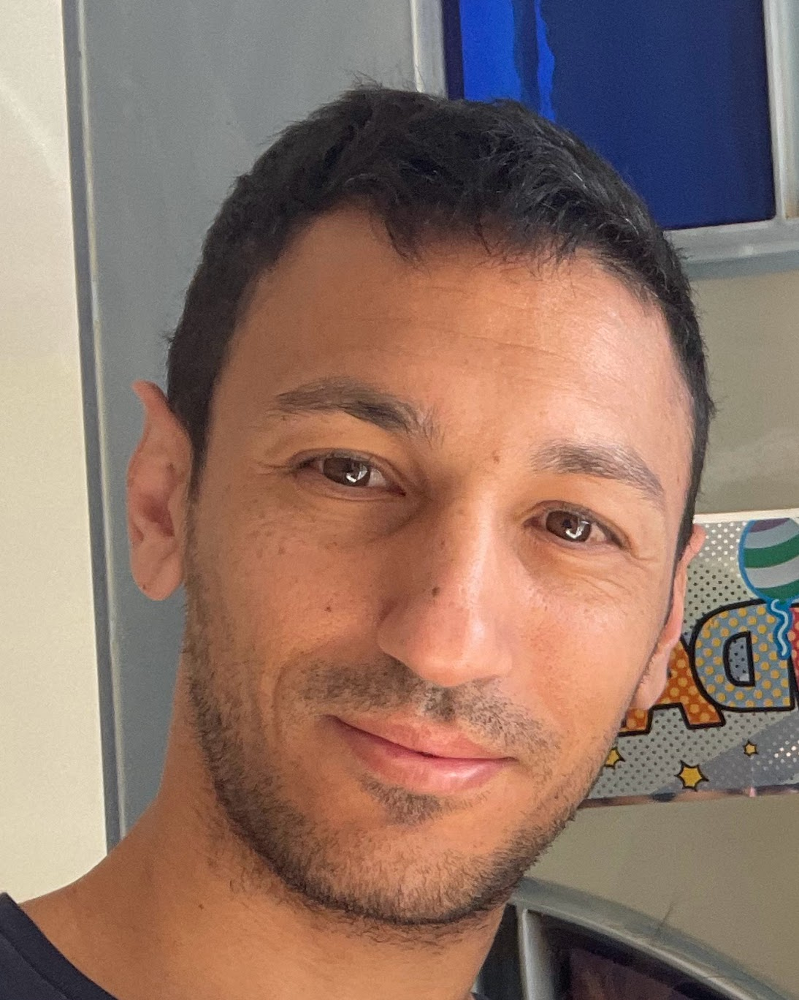

Tomer Tabib Rabinovitz

Education
2013-2017: First degree of physiotherapy - B.PT
2008-2011: Military Service
2001-2007: Emek H'ahula High School
Experience
2017-2018: physical therapist in youth department of Maccabi Tel-Aviv (soccer)
2018-2019: Head of medical team youth department MTA
2019-2022: Head of medical team of firts team Hapoel Tel-Aviv
2018-20205: Lecturer in the Department of Health Professions - Ono Academic College
2018-2025: Physiotherapist at the Physiopro Orthopedic Rehabilitation Center
Skills
Microsoft Office
Web Development
Guidance
Team Management
Costumer Service
Contat Me